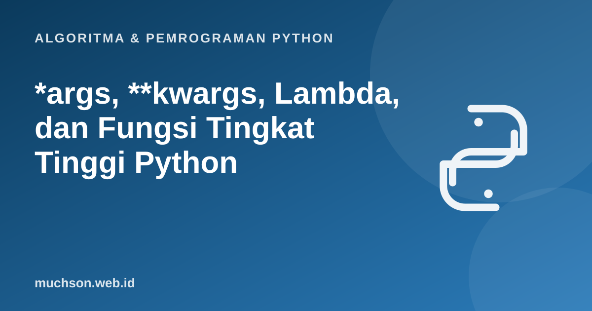

Beranda › Artikel › Algoritma & Pemrograman Python
Algoritma & Pemrograman Python*args, **kwargs, Lambda, dan Fungsi Tingkat Tinggi Python
Fungsi di Python adalah objek biasa: bisa disimpan di variabel, dikirim sebagai argumen, dan dikembalikan dari fungsi lain. Gagasan itu membuka gaya pemrograman yang ringkas dan kuat. Materi ini membahas mulai dari argumen yang jumlahnya fleksibel sampai dekorator, dengan semua contoh dijalankan sungguhan.
Sebaiknya sudah paham: fungsi Python, list dan dictionary

Tujuan belajar
Setelah membaca dan mencoba materi ini, Anda mampu:
- memakai *args dan **kwargs untuk argumen berjumlah variabel
- memakai unpacking * dan ** saat memanggil fungsi
- menulis fungsi lambda dan tahu batasnya
- memakai map, filter, sorted(key=), dan reduce
- menjelaskan closure dan menulis dekorator sederhana
*args dan **kwargs
def jumlah(*args): # args adalah tuple
print(args)
return sum(args)
print(jumlah(1, 2, 3, 4))
def profil(**kwargs): # kwargs adalah dict
for k, v in kwargs.items():
print(f"{k}: {v}")
profil(nama="Ani", umur=19, kota="Malang")
def campur(a, b=2, *args, **kwargs):
print(a, b, args, kwargs)
campur(1, 3, 5, 7, x=9)(1, 2, 3, 4)
10
nama: Ani
umur: 19
kota: Malang
1 3 (5, 7) {'x': 9}
Unpacking saat memanggil
def kali(a, b, c):
return a * b * c
angka = [2, 3, 4]
print(kali(*angka)) # list dibuka menjadi 3 argumen
opsi = {"a": 2, "b": 5, "c": 10}
print(kali(**opsi)) # dict dibuka menjadi argumen kata kunci
print([*range(3), *"ab"]) # unpacking juga bisa membangun list24
100
[0, 1, 2, 'a', 'b']
Lambda: fungsi anonim satu ekspresi
kuadrat = lambda x: x * x
print(kuadrat(7))
tambah = lambda a, b=10: a + b
print(tambah(5), tambah(5, 1))49
15 6
Batas lambda
Lambda hanya boleh berisi satu ekspresi tanpa pernyataan. Pakai terutama sebagai argumen singkat (misalnya untuk key=). Bila logikanya butuh nama atau lebih dari satu baris, tulis def.
Fungsi tingkat tinggi: map, filter, sorted, reduce
from functools import reduce
data = [1, 2, 3, 4, 5, 6]
print(list(map(lambda x: x * 10, data)))
print(list(filter(lambda x: x % 2 == 0, data)))
print(reduce(lambda total, x: total + x, data)) # 21
print(reduce(lambda a, b: a * b, data)) # 720
# versi comprehension (sering lebih jelas)
print([x * 10 for x in data], [x for x in data if x % 2 == 0])
siswa = [{"nama": "Ani", "nilai": 88}, {"nama": "Budi", "nilai": 72}, {"nama": "Citra", "nilai": 95}]
terbaik = max(siswa, key=lambda s: s["nilai"])
print(terbaik["nama"], [s["nama"] for s in sorted(siswa, key=lambda s: -s["nilai"])])[10, 20, 30, 40, 50, 60]
[2, 4, 6]
21
720
[10, 20, 30, 40, 50, 60] [2, 4, 6]
Citra ['Citra', 'Ani', 'Budi']
Closure: fungsi yang mengingat lingkungannya
def buat_penghitung():
hitung = 0
def tambah():
nonlocal hitung # mengubah variabel di fungsi pembungkus
hitung += 1
return hitung
return tambah
a = buat_penghitung()
b = buat_penghitung()
print(a(), a(), a(), b()) # a dan b punya "hitung" masing-masing1 2 3 1
Dekorator: membungkus fungsi
import time
from functools import wraps
def catat_waktu(fungsi):
@wraps(fungsi)
def pembungkus(*args, **kwargs):
mulai = time.perf_counter()
hasil = fungsi(*args, **kwargs)
durasi = time.perf_counter() - mulai
print(f"{fungsi.__name__} selesai, durasi positif: {durasi >= 0}")
return hasil
return pembungkus
@catat_waktu # sama dengan: hitung = catat_waktu(hitung)
def hitung(n):
return sum(range(n))
print(hitung(100000))hitung selesai, durasi positif: True
4999950000
Latihan mandiri1. Tulis fungsi
3. Ubah
4. Buat fungsi
Coba kerjakan dulu sebelum membuka jawaban.
1. Tulis fungsi rata_rata(*angka) yang menerima sejumlah bilangan dan mengembalikan rata-ratanya.
def rata_rata(*angka): return sum(angka) / len(angka). Tangani kasus tanpa argumen (ZeroDivisionError) bila diminta.2. Urutkan list kata berdasarkan huruf terakhirnya.
sorted(kata, key=lambda k: k[-1])3. Ubah reduce(lambda a, b: a + b, data) menjadi pemanggilan fungsi bawaan.
sum(data)4. Buat fungsi pangkat(n) yang mengembalikan fungsi yang memangkatkan argumennya dengan n.
def pangkat(n):
return lambda x: x ** n. Contoh: kubik = pangkat(3); kubik(2) menghasilkan 8.Ringkasan
- *args mengumpulkan argumen posisi (tuple), **kwargs argumen kata kunci (dict).
- * dan ** pada pemanggilan membuka list atau dict menjadi argumen.
- Lambda: fungsi anonim satu ekspresi, cocok untuk key= dan argumen singkat.
- map, filter, reduce, dan sorted(key=) menerima fungsi sebagai argumen.
- Closure mengingat lingkungannya; dekorator membungkus fungsi tanpa mengubah kodenya.
Tanya jawab
Apakah map lebih cepat dari list comprehension?
Untuk fungsi bawaan, kadang sedikit lebih cepat; untuk lambda biasanya tidak. Pilih yang paling terbaca, lalu ukur bila performa penting.
Mengapa menamai lambda dengan variabel dianggap kurang baik?
PEP 8 menyarankan def untuk fungsi bernama, karena traceback dan debugging lebih jelas. Lambda tetap cocok sebagai argumen sementara.
Apa itu keyword-only argument?
Parameter setelah * pada definisi, misalnya
def f(a, *, b), hanya bisa diberikan dengan nama: f(1, b=2).Referensi
- Dokumentasi Python: More on Defining Functions (*args, **kwargs, lambda)
- Dokumentasi Python: functools (reduce, wraps, lru_cache)
- Dokumentasi Python: Python Scopes and Namespaces (nonlocal)
- PEP 318, Decorators for Functions and Methods
- MIT OpenCourseWare 6.0001: Introduction to Computer Science and Programming in Python